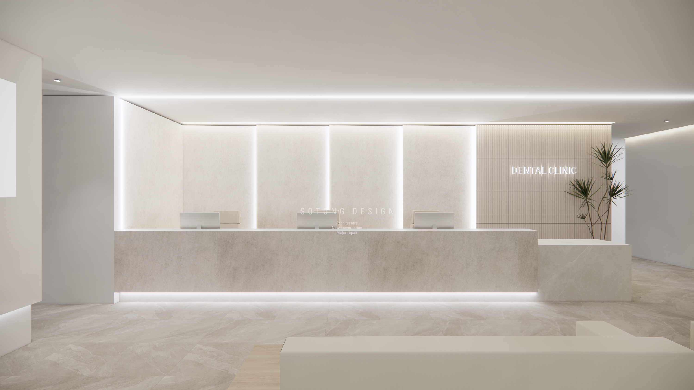
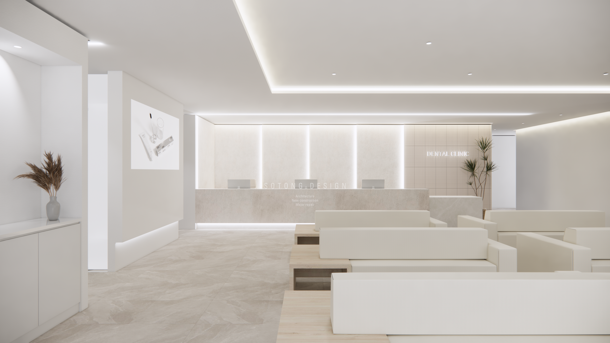
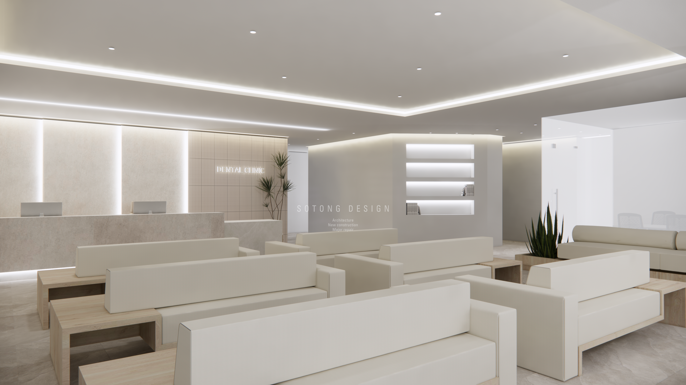
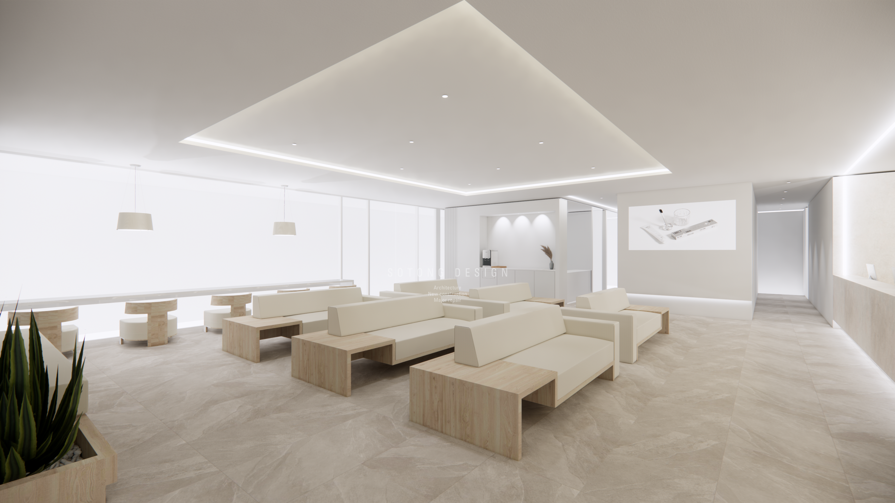
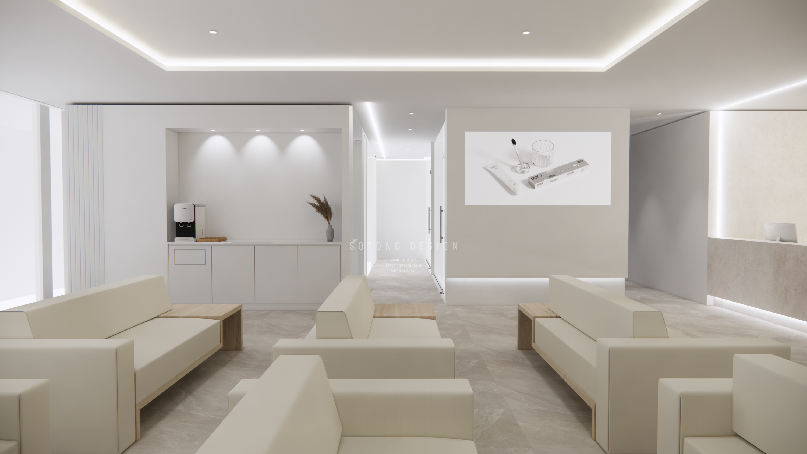
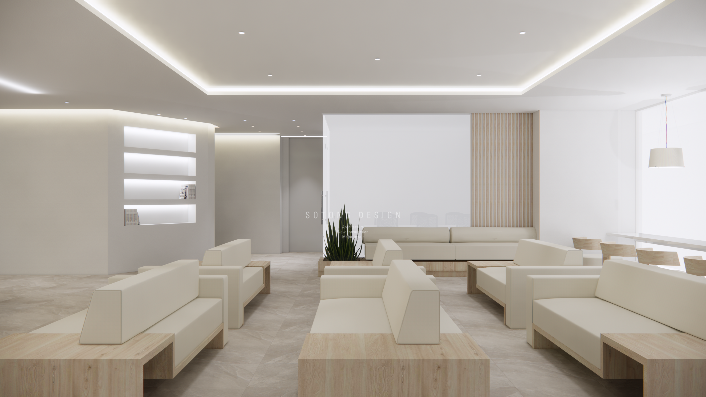
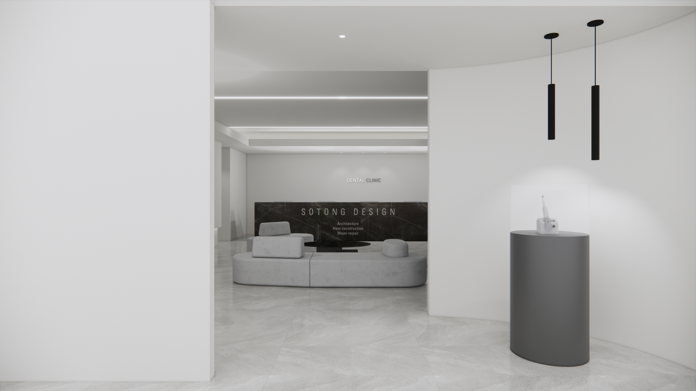
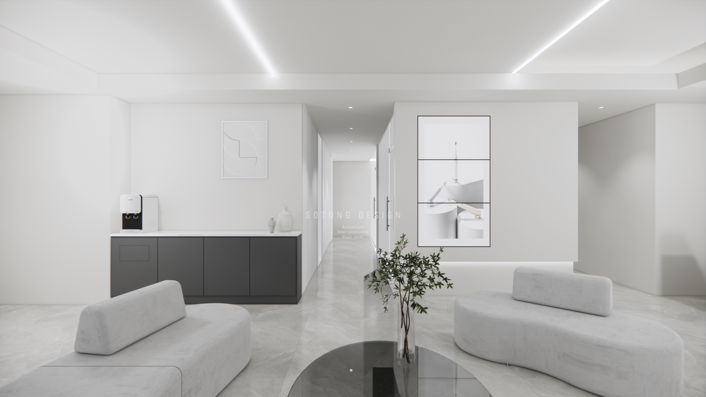
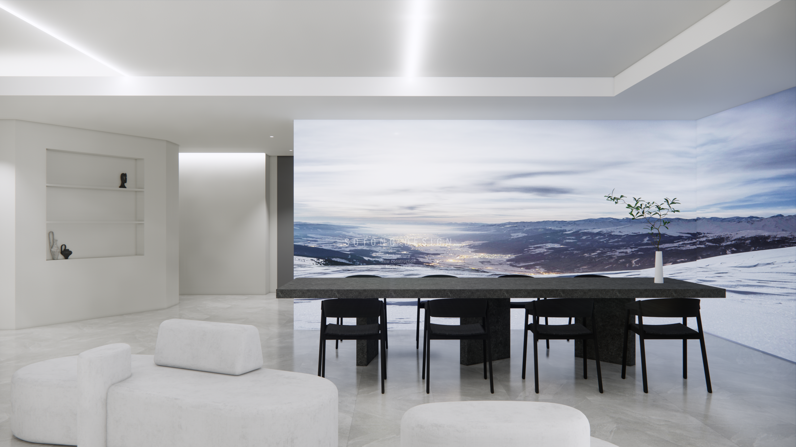
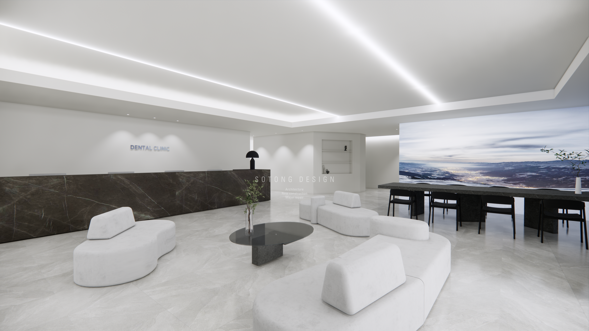

병원 로비 디자인
병원의 첫인상을 두 가지 콘셉트로 풀어낸 상업공간 디자인 프로젝트

병원의 첫인상을 만드는 로비
병원 로비는 방문객이 가장 먼저 마주하는 공간이자 접수와 대기, 이동이 동시에 이루어지는 공간입니다. 이용자의 편안함과 병원의 전문적인 이미지를 함께 담을 수 있도록 서로 다른 두 가지 디자인 방향을 제안했습니다.
밝고 편안한 분위기의 로비
첫 번째 시안에는 밝은 베이지와 아이보리 계열의 대리석을 사용했습니다. 전체 공간을 깨끗하고 넓어 보이게 구성하면서도 공간이 지나치게 차갑게 느껴지지 않도록 크림색 가구와 밝은 우드 소재를 함께 배치했습니다. 대기 가구는 이용자 간 적절한 거리를 확보하면서도 자연스럽게 마주 보고 앉을 수 있도록 구성했습니다.



대형 LED 스크린을 활용한 공간 연출
병원 홍보 영상이나 안내 콘텐츠를 보여주는 기능뿐만 아니라 자연 풍경과 아트 영상 등을 활용해 공간 전체의 분위기를 변화시킬 수 있도록 제안했습니다.


세련되고 감각적인 로비
두 번째 시안은 채도가 낮은 그레이톤과 블랙 대리석을 적용했습니다. 밝은 첫 번째 시안과 달리 공간의 중심을 분명하게 잡아주면서 고급스럽고 전문적인 분위기를 전달하도록 구성했습니다. 천장과 벽면의 라인 조명은 전체 공간의 선이 자연스럽게 이어지도록 계획해 단정하고 시크한 이미지를 강조했습니다.

라운드 벽면을 활용한 전시 공간
입구에는 부드러운 곡선 형태의 벽면을 설치해 작은 전시 공간처럼 활용할 수 있도록 구성했습니다. 라운드 형태는 공간의 흐름을 부드럽게 연결하고, 각진 구조가 주는 딱딱한 느낌을 완화해 줍니다. 병원의 작품이나 안내 콘텐츠, 브랜드 이미지를 전시하면 로비에 더욱 특별한 인상을 줄 수 있습니다.

짙은 대리석으로 중심을 잡은 리셉션
두 번째 시안의 리셉션에는 채도가 낮은 그레이톤과 블랙 대리석을 적용했습니다. 밝은 첫 번째 시안과 달리 공간의 중심을 분명하게 잡아주면서 고급스럽고 전문적인 분위기를 전달합니다. 천장과 벽면의 라인 조명은 전체 공간의 선이 자연스럽게 이어지도록 계획해 단정하고 시크한 이미지를 강조했습니다.


벽면 전체를 활용한 미디어 공간
한쪽 벽면에는 대형 LED 스크린을 설치해 병원 안내와 홍보뿐 아니라 다양한 영상과 미디어 콘텐츠를 보여줄 수 있도록 제안했습니다. 계절이나 시간, 콘텐츠에 따라 로비의 분위기를 유연하게 바꿀 수 있다는 점도 대형 미디어 월의 장점입니다.

핵심 설계 포인트
쉽게 인식되는 리셉션
입구에서 리셉션 위치가 자연스럽게 보이도록 구성해 처음 방문한 이용자도 쉽게 접수 공간을 찾을 수 있도록 했습니다.
공간을 변화시키는 미디어 월
대형 LED 화면을 안내와 홍보뿐 아니라 영상과 아트 콘텐츠를 보여주는 공간 요소로 제안했습니다.
편안한 대기 공간
직선형과 곡선형 가구를 조합해 이용자가 편안하게 머물 수 있는 대기 공간을 구성했습니다.
공간의 선을 강조하는 조명
간접조명과 라인 조명을 활용해 청결하면서도 차분한 병원 이미지를 표현했습니다.
공간에 대한 다음 대화를 시작해 보세요.
주거·상업공간 디자인과 리모델링을 상담부터 설계, 시공과 준공까지 함께합니다.
※ 본 프로젝트는 실제 시공 사례가 아닌 공간 디자인 제안 시안입니다. 이미지는 디자인 방향과 공간 구성을 전달하기 위한 시각화 자료입니다.